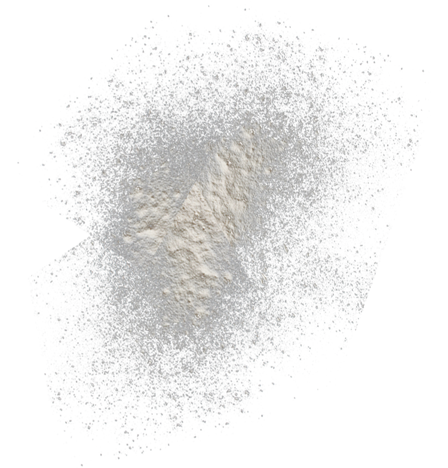

Our addition to pancakes


A little about the ingredients
We carefully approach the preparation of our pancakes. Therefore, we make flour ourselves. Our hens also lay eggs for us, and we make sugar beet sugar.